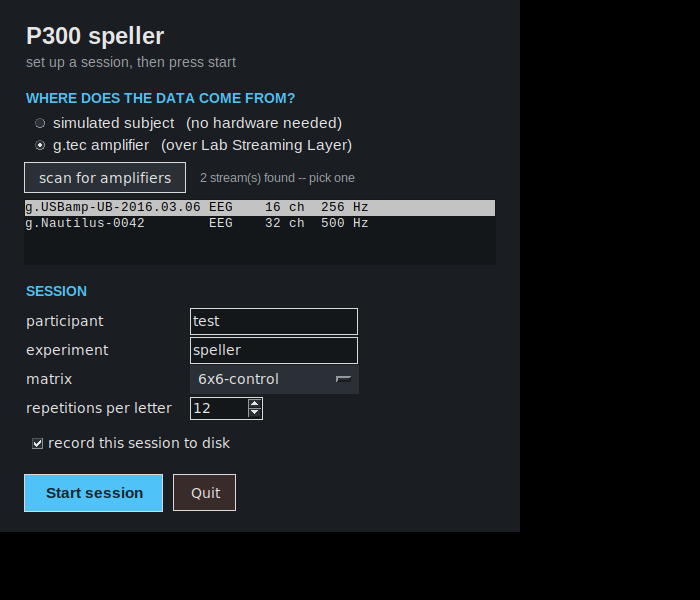
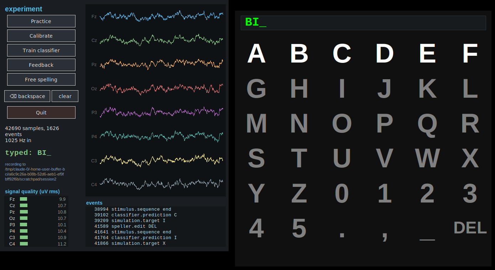
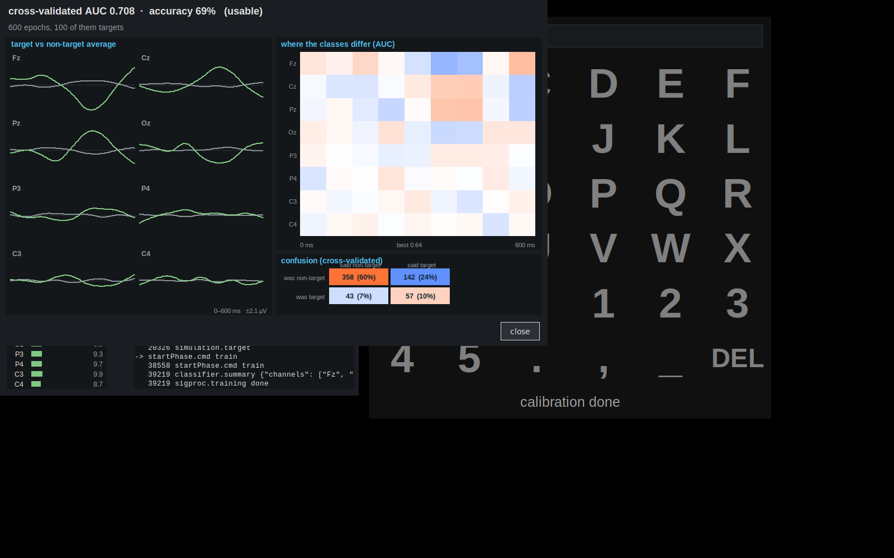

Your first experiment
A whole session against the simulated participant — calibrate, train, spell — and what every screen is telling you.
Start it:
python -m pyspeller run
The launcher

| Field | What it does |
|---|---|
| Source | Where the EEG comes from: the simulator, or a g.tec amplifier over LSL |
| Participant / experiment | Names the folder your recording goes into |
| Matrix | Which grid of symbols to spell from — the alphabet with editing keys, the classic grid, Kazakh, Russian, or a small 3×3 for demos |
| Language on screen | What the participant reads. Follows the matrix unless you change it |
| Repetitions per letter | How many times each row and column flashes. More = slower and more accurate |
| Record to disk | Writes the raw EEG and every event into ~/output/… |
Press Start session. Two windows open: the control panel for you, and the speller for the participant. In a real session you drag the speller onto their monitor and maximise it.
The control panel

- the traces are the last five seconds of every channel. With the simulator you will see 1/f noise, an alpha rhythm, and the occasional simulated blink.
- signal quality is the level of each channel in microvolts. Green is healthy; orange and red mean a channel much louder than the others.
- the event log is the session's narrative — every cue, every sequence end, every prediction. Flashes are left out or it would scroll past too fast.
- typed: is what has been spelled so far, the same text the participant sees.
Calibrate
Press Calibrate. The speller cues five letters (B, R, A, I, N) and flashes
rows and columns for each of them. With --speed at its default this is real
time, about two minutes; the simulated participant "attends" to the cued letter,
so the data is labelled.
Watch the event log: simulation.target B, then a burst of flashing, then
stimulus.sequence end, five times over, then stimulus.training end.
Train
Press Train classifier. It takes a second, and a window opens.

For now, one number matters: cross-validated AUC. It is the probability that a randomly chosen target flash scores higher than a randomly chosen non-target one — 0.5 is a coin toss, 1.0 is perfect. With the simulator you should see 0.70–0.82. If you see 0.5, something is broken; if you see 0.99, you are not running the simulator you think you are.
Spell
Press Feedback. The speller cues B, C, I in turn, flashes for each, and then
shows what the classifier decided — in green in the grid, and appended to the
text field. The panel's typed: line follows along.
Then press Free spelling: the same thing without a cue. This is the mode a real user works in — they look at whatever they want and it appears.
Correcting a letter
When a letter comes out wrong — and it will — the participant selects DEL in
the matrix, exactly like any other key, and the last character disappears. You
can also press ⌫ backspace on the panel, which does the same from your side
and shows up in the event log as speller.edit DEL. _ types a space.
Without any windows
Everything above also works headless, which is how you test changes and how the exercises are scored:
python -m pyspeller demo --speed 20
--speed 20 compresses experiment time twenty-fold: the data in the buffer is
identical because everything is indexed by samples, but a four-minute session
takes twelve seconds. Useful flags:
| Flag | Meaning |
|---|---|
--n-repetitions 8 |
fewer flashes per letter — faster, less accurate |
--layout kk |
the Kazakh matrix (also ru, 6x6, 3x3) |
--erp-amplitude 4 |
a harder participant: a 4 µV P300 instead of 8 |
--noise-amplitude 20 |
a noisier recording |
--save |
record the session to ~/output/… |
python -m pyspeller demo --speed 20 --erp-amplitude 4 and then
the same with --erp-amplitude 12. Watch what the AUC and the letter
accuracy do. You have just measured how signal strength turns into spelling
performance — which is the whole game with a real participant.